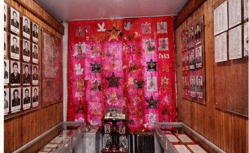
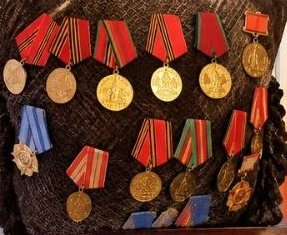
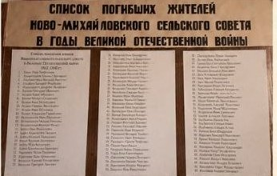
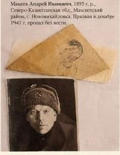

Войтенко Михаил Арсентьевич
род. 1922
орден Отечественной войны II степени, медаль «За отвагу», медаль «За освоение целинных земель», медаль «За доблестный труд», юбилейные медали
по рукописи учителя-фронтовика П.А. Кострицы, старым газетам и фотографиям
1895 · 2026

В школе хранится рукописная книга. Её написал от руки Пётр Александрович Кострица.
Пётр Александрович родился в 1922 году. Он прошёл Великую Отечественную войну. Его портрет есть на плакате «Бессмертный полк». После войны он много лет преподавал историю в Новомихайловской школе.
Свою книгу о селе он писал синими чернилами, ровным наклонным почерком. Бумагу брал ту, что была под рукой: старые цветные бланки. Внизу каждого листа напечатано «Утверждено ... 196_ г.». Значит, книга писалась между 1960-ми годами и 1981 годом, когда автора не стало.

Расшифрованы 3 страницы рукописи о начале села. Из 310 слов прочитано 304. Все факты сверены с газетами 2001–2010 годов, школьной презентацией и интернет-источниками.
«Основатели нашего села приехали осенью.»
из рукописи П.А. Кострицы
1894 – 1895
Основатели села приехали осенью 1894 года. Построить дома до зимы они не успели и зимовали в селе Богомолово.
Ранней весной 1895 года на бугре между озёрами «Кас-Агач» и «Русское» появились первые поселенцы. Каждый хозяин получил 15 десятин земли. Это около 16 гектаров.
Строили всё вместе, артелью. Сначала рыли землянки, потом покупали скот и инструменты. Стены делали из самана, то есть из глины с соломой.

* фамилия в рукописи читается не совсем ясно

«Паши, собирай урожай, делай на своём поле всё, на что способны твои мозолистые, огрубевшие руки.»
П.А. КострицаСначала село называлось Михайловское. Позже появилось название Новомихайловка.
Село стоит между озёрами Косагаш и Русское, в 50 км от районного центра Мамлютки. В рукописи озеро названо «Кас-Агач», а в интернете «Косагаш». Скорее всего, это одно и то же озеро, просто имя записали по-разному. По-казахски «қос ағаш» значит «два дерева». Это предположение, точного подтверждения пока нет.


Кострица пишет, что ночью у землянок стояла «тревожная тишина». Рядом с собой клали ружьё, а у кого его не было, вилы или топор. По словам автора, у этих земель был ещё один хозяин, бай. Между переселенцами и казахами случались столкновения.
Рукопись рассказывает только о переселенцах. Взгляд казахских аулов в ней не показан. Земля была их пастбищем, поэтому споры возникали у обеих сторон. Сегодня в селе и в округе рядом живут люди разных народов, и эта история напоминает, как важно договариваться и уважать друг друга.
1898 · 1899
Через 3 года после основания, в 1898 году, в селе открыли школу. Но не все дети получали образование, потому что родители считали это пустым делом: главнее они считали работу по хозяйству. В 1954 году на базе семилетней школы была создана средняя школа. А в 1974 году было открыто здание средней школы, в котором дети села обучаются до сих пор.
В 1899 году построили церковь. С 1899 года до эпохи гонений на Православие здесь существовала церковь. Возрождение приходской жизни в селе началось в 90-х годах прошлого столетия. Начало возведению типового храма во имя Архистратига Михаила было положено в 2008 году по инициативе и трудами предпринимателя Геннадия Щеголева и его сыновей, Вячеслава и Олега. Так маленький посёлок переселенцев стал настоящим селом.


В селе есть приход Архистратига Михаила. Можно предположить, что название села связано с именем Архангела Михаила, но прямого объяснения в собранных материалах нет.
1941 – 1945


«Кругом была чёрная выгоревшая земля, пропитанная кровью бойцов. Ни зверей, ни птиц... Это был настоящий ад!»
М.А. Войтенко о Сталинграде«Не оставайтесь в долгу перед Родиной, перед погибшими, перед живыми. Будьте верными своей Родине, любите её, защищайте.»
слова ветерана школьникамИз газеты 2010 года
В мае 2010 года ученицы 11 класса Е. Кнор и Д. Сагандыкова записали беседу с ветераном Михаилом Арсентьевичем Войтенко. Статья «Солдат Великой войны», 14.05.2010.
В клубе отметили 65 лет Победы. Пришли М.А. Войтенко и В.И. Глухов. Работала выставка «Мы помним и помнит мир спасённый!», прошёл митинг «Негасимый огонь памяти!».
В 1993 году в школе создан музей, где хранятся архивные документы, письма фронтовые, награды, фотографии разных лет, военные вещи, старинные предметы быта.





Новомихайловка всегда была хлебным селом. Отсюда родом 2 Героя Социалистического Труда.


1910 – 1995
Родился 14 июня 1910 года в Новомихайловке. Работал комбайнёром Интернациональной МТС Мамлютского района. МТС значит машинно-тракторная станция: там стояли трактора и комбайны для колхозов.
В 1951 году на сцепке из 2 комбайнов он намолотил около 12 803 центнеров зерна. 21 июня 1952 года ему присвоили звание Героя Социалистического Труда, вручили орден Ленина и золотую медаль «Серп и Молот». Похоронен в селе Дубровное.
1917 – 1998
Тоже уроженец села и Герой Социалистического Труда. Подробные проверенные сведения о его работе пока не найдены. Это задача для следующих исследователей.
«На плаву мы удержимся всегда, но надо работать на перспективу, внедрять новые технологии.»
Г.Г. Щеголев, 2001 год


В буклете 2001 года ТОО «Новомихайловское» названо одним из лучших хозяйств Мамлютского района. В тот год здесь собрали больше 22 центнеров зерна с гектара. Хозяйство работало вместе с корпорацией «Golden Grain Group». Позже хозяйство стало называться ТОО «Новомихайловское-2003». Руководил им Г.Г. Щеголев, директор.
2010 год


30 октября 2010 года в клубе отметили День работника сельского хозяйства. Лето было засушливым, но хозяйство всё равно собрало хороший урожай. Хор спел песню «Даль великая», выступила группа «Девчата».
Эти люди не получали звёзд Героев. Но без их работы не было бы ни одного урожая.


Окончила Новомихайловскую школу и вернулась в неё работать. Была учителем начальных классов, 10 лет старшей пионервожатой, 5 лет организатором внеклассной работы, 5 лет директором. Потом стала учителем русского языка и литературы. О ней написали статью «Неравнодушный человек».


Проза: «Родной уголок», «В пургу», «Цветы от Сокола», «Одиночество», «Время примеряет всех», «Встреча с отцом», «Счастье матери», «Повесть о гармонисте», «От Ишима до Амура».
Стихи: «Село Новомихайловка моя», «Родная школа», «Озеро Параскино», «У крылечка ветер», «Новомихайловке 100 лет», «Ветераны».


Сегодня в селе есть школа, детский сад, фельдшерско-акушерский пункт, клуб и библиотека. В 2020 году здесь жили 296 семей. Для переселенцев с юга страны построили 5 домов. В 1895 году сюда приехали первые переселенцы, и через 125 лет в село снова приезжают новые жители.
Наведите камеру телефона на QR-код, и откроется видеорепортаж о Новомихайловке на YouTube.